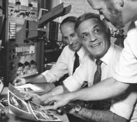
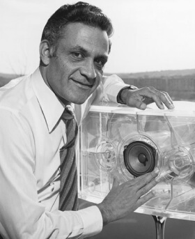

<section class="history">
    <div class="container">
        <h2 class="history__title">brand creation history</h2>
        <p class="history__desc">The history of Bose Corporation began 
            with disappointment. In 1956, MIT graduate student Amar Bose bought one of the best stereo systems at the time for his home.
            After a few minutes of listening to the audio recording, his bewilderment turned 
            to disappointment.</p>
            <picture>
                <source srcset="./img/desktop/history-desktop-first@1x.png 1x, ./img/desktop/history-desktop-first@2x.png 2x" media="(min-width: 1320px)">
                <source srcset="./img/tablet/history-tablet-first@1x.png 1x, ./img/tablet/history-tablet-first@2x.png 2x" media="(min-width: 708px)">
                <source srcset="./img/phone/history-phone-first@1x.jpg 1x, ./img/phone/history-phone-first@2x.jpg 2x" media="(max-width: 647px)">
                
            </picture>
            <p class="history__desc">From Amar's point of view, the sound was 
                so flat and unnatural that it was better not 
                to listen to the music at all than to listen 
                to it in such a distorted form.</p>
            <p class="history__desc">Bose's frustration grew into a firm determination to build audio equipments that would reproduce sound with impeccable accuracy and naturalness</p>
            <picture>
                <source srcset="./img/desktop/history-desktop-second@1x.png 1x, ./img/desktop/history-desktop-second@2x.png 2x" media="(min-width: 1320px)">
                <source srcset="./img/tablet/history-tablet-second@1x.png 1x, ./img/tablet/history-tablet-second@2x.png 2x" media="(min-width: 708px)">
                <source srcset="./img/phone/history-phone-second@1x.jpg 1x, ./img/phone/history-phone-second@2x.jpg 2x" media="(max-width: 647px)">
                
            </picture>
            <svg class="history__svg">
                <use href="../img/symbol-defs.svg#quotes"></use>
            </svg>
            <h3 class="history__quote">Never stop dreaming. Always dream of the best, and think about how to achieve it.</h3>
            <p class="history__quote-desc">Amar Bose is a company founder</p>
    </div>
</section>